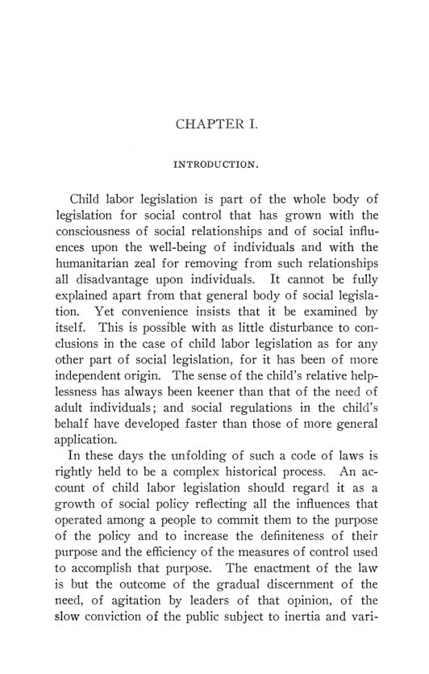

Field, 1910: sessenta anos de leis contra o trabalho infantil em Nova Jersey
Leitura: 8 min
Em 1910, Arthur Sargent Field reconstituiu a política de Nova Jersey para o trabalho infantil, da lei de 1851 à de 1904: idade mínima, jornada, provas de idade, inspeção e o peso da opinião pública.


Em 1884, o primeiro inspetor de fábricas de Nova Jersey fez um levantamento cuidadoso das crianças empregadas. Concluiu que, em média, elas tinham começado a trabalhar aos nove anos. Em regra, iam à escola até os seis ou sete anos e eram tiradas dela dois anos depois. A lei em vigor, de 1851, proibia o trabalho de menores de dez anos.
The Child Labor Policy of New Jersey, de Arthur Sargent Field, ocupa o nº 3 do vol. 11 da terceira série do American Economic Association Quarterly, datado de outubro de 1910. O trabalho de campo foi feito no verão e no outono de 1908, e o texto, escrito no inverno seguinte, com orientação de Henry W. Farnam e Clive Day, de Yale, e apoio financeiro da Carnegie Institution of Washington. O prefácio é assinado em Hanover, New Hampshire, em julho de 1910. Field avisa que não quer um compêndio cronológico de leis, mas a história da formação de uma política: a percepção do problema, a agitação, a resistência dos interesses e a lenta adesão do público.
O que dizia a primeira lei?
A primeira declaração do estado veio em 1851, depois de três anos de petições e de uma campanha eleitoral disputada em torno de reformas. O governador George F. Fort pediu, na mensagem inaugural, proteção para as crianças das fábricas:
“Os pequenos trabalhadores das fábricas também devem ser protegidos de exigências excessivas” (“Infant laborers in factories should also be protected from such excessive exactions”)
A lei proibiu admitir menores de dez anos em qualquer fábrica e limitou a jornada dos menores de 21 anos a dez horas por dia e sessenta por semana. A multa era de US$ 50 por infração, cobrada em ação civil em nome do supervisor dos pobres. Para Field, a idade era baixa demais para alterar a prática, não havia meio de comprovar a idade e ninguém estava encarregado de processar os infratores. Ainda assim, a lei comprometeu o estado, pela primeira vez, com o controle do emprego infantil, e foi a única até 1883.
A escola obrigatória chegou em 1874, três anos depois de as escolas públicas se tornarem gratuitas em todo o estado: crianças de oito a treze anos deveriam frequentar ao menos doze semanas por ano, seis delas seguidas.
Por que a lei de 1883 falhou?
A agitação recomeçou no fim dos anos 1870, liderada por trabalhadores que se organizavam e pelo novo Bureau of Statistics, criado em 1878. Projetos de 1880, 1881 e 1882 morreram na Câmara ou no Senado. Em 1883 passou uma lei aplicada a minas e manufaturas, com idade mínima de doze anos para meninos e catorze para meninas e doze semanas de escola para os que tivessem até quinze. Criou também um inspetor, nomeado pelo governador com aprovação do Senado, com salário de US$ 1.200.
Uma cláusula anulava o resto. O certificado de idade feito pelo próprio menor e pelos pais no momento da contratação valia como prova conclusiva em qualquer processo. Contra pais dispostos a mentir e patrões dispostos a aceitar, a idade mínima deixava de ser exigível.
Em 1892 veio uma lei mais ambiciosa: dez horas por dia, 55 por semana e nenhum trabalho noturno para menores de dezoito anos e mulheres. Passou sem voto contrário nas duas casas, mas enfraquecida: excluiu a indústria de conservas e a de vidro, retirou a exigência de visitas trimestrais e trocou o dever do inspetor de processar os infratores por uma simples faculdade. Contestada nos tribunais, ficou nos livros e desacreditada. Na segunda metade do período, segundo Field, a inspeção foi entregue a nomeações políticas, e é duvidoso que houvesse restrição digna do nome.
O que mudou depois de 1900?
O tema ganhou novos defensores: a Consumers' League de Nova Jersey, fundada em 1901, clubes femininos, entidades de caridade e os jornais. Field registra a morte, em junho de 1901, de um menino de nove anos que dormiu num trilho depois de trabalhar dia e noite numa fábrica de vidro; o júri do legista censurou a empresa. Em 1902 os inspetores foram obrigados a dedicar tempo integral ao cargo, e uma lei de 1903 elevou a idade mínima dos meninos para catorze anos.
O governador Murphy pôs seu secretário particular, John L. Swayze, à frente do departamento de inspeção. Um investigador independente, trabalhando incógnito, confirmou casos de crianças abaixo da idade, e Swayze concluiu que eram várias centenas. Ele preparou um projeto novo, ouviu fabricantes, sindicalistas e entidades filantrópicas e pediu aos defensores da reforma que chegassem a um acordo antes de ir ao Legislativo. Dali nasceu a Children's Protective Alliance.
A peça central era a prova de idade. A criança precisava de declaração juramentada dos pais acompanhada de certidão de nascimento ou, na falta dela, de certidão de batismo. O patrão mantinha um registro dos menores de dezesseis anos e enviava cópias dos papéis ao departamento em Trenton. Em caso de dúvida, os pais tinham cinco dias para provar a idade; o ônus deixava de ser do Estado. Swayze disse a Field que esse dispositivo era o mais valioso da lei.
A lei pegou?
Segundo Field, a observância depois de 1904 foi muito superior à de qualquer período anterior. As fábricas de vidro passaram a ter dificuldade para encontrar meninos com mais de catorze anos, e cresceu a procura por certidões de nascimento. A resistência que restou vinha sobretudo de pequenos patrões e de capatazes pressionados por custos. A proibição do trabalho noturno, retirada do projeto de 1904 por pressão da indústria do vidro, só passou em 1910: proibido para menores de quinze anos e, a partir de 1º de julho de 1911, para menores de dezesseis.
O ponto mais contestado pelos fabricantes era a semana de 55 horas. Na Pensilvânia, o estado concorrente mais próximo, a semana permitida para crianças era de sessenta horas, diferença que Field calcula em um mês de trabalho por ano. Em 1908, a junta comercial de Camden enviou circular às demais propondo uma campanha contra a lei; até outubro, recebera uma única resposta.
Que balanço Field faz?
Para Field, a política entre 1883 e 1904 avançou sobretudo pela pressão das organizações operárias, enquanto o público em geral apoiava sem acompanhar a execução:
“Sua determinação era forte quando o princípio estava em jogo” (“Its resolution was strong when the principle was at issue”)
A lei de 1904 deixou lacunas, algumas por receio de inconstitucionalidade: não exigia escolaridade mínima, não alcançava o comércio e não previa amparo às famílias pobres que dependiam do salário dos filhos. Comparada a Massachusetts, conclui Field, Nova Jersey ainda era menos sensível ao problema, mas tomara consciência dele havia só meia dúzia de anos.
Na minha leitura
Na minha leitura, o estudo mostra que uma regra só vale o que vale a sua prova. Entre 1883 e 1904, Nova Jersey teve idade mínima no papel, mas aceitava como conclusiva a palavra de quem tinha interesse em mentir. A lei de 1904 mudou o desenho dos incentivos: documento de terceiro, registro no próprio estabelecimento, cópia enviada ao fiscal e ônus da prova sobre os pais. O patrão que cumpria o rito ficava protegido; o que o ignorava assumia o risco. A fiscalização deixou de depender só de flagrantes.
O outro dilema é de custo distribuído. A semana de 55 horas impunha às fábricas locais uma desvantagem frente à Pensilvânia, e a falta de amparo às famílias pobres transferia a elas o custo da proibição. Field registra as duas objeções sem descartá-las: a proteção da criança tem preço, e a política precisa dizer quem o paga.
Glossário
- Supervisor dos pobres (overseer of the poor)
- funcionário municipal encarregado da assistência aos pobres; na lei de 1851, a multa era cobrada em seu nome.
- Frequência escolar obrigatória
- exigência legal de que crianças de certa idade frequentem a escola por um número mínimo de semanas ou dias.
- Inspetor de fábricas
- agente do Estado encarregado de visitar estabelecimentos e processar violações das leis do trabalho.
- Declaração juramentada (affidavit)
- declaração escrita feita sob juramento perante autoridade, com valor de prova.
- Ônus da prova
- obrigação de demonstrar um fato; na lei de 1904, cabia aos pais provar a idade da criança.
Fontes
- [The Child Labor Policy of New Jersey]: Preface (pp. iii–iv). JSTOR · Internet Archive (PDF)
- [The Child Labor Policy of New Jersey]: Contents (pp. v–vi). JSTOR · Internet Archive (PDF)
- The Child Labor Policy of New Jersey (pp. 1–229). JSTOR · Internet Archive (PDF)
- Sumário da edição no JSTOR: American Economic Association Quarterly, 3ª série, vol. 11, nº 3.
Documento em domínio público (EUA, publicado antes de 1931), via JSTOR Early Journal Content e Internet Archive. Resumo e comentário do autor deste site, sem afiliação com a American Economic Association. Encontrou um erro? Escreva: a correção é publicada no próprio texto, com data.
← Nº 107 · O Bulletin de junho de 1910: Walras, Giffen e Sumner Nº 109 · O Bulletin de setembro de 1910: St. Louis, Schmoller e o câmbio →